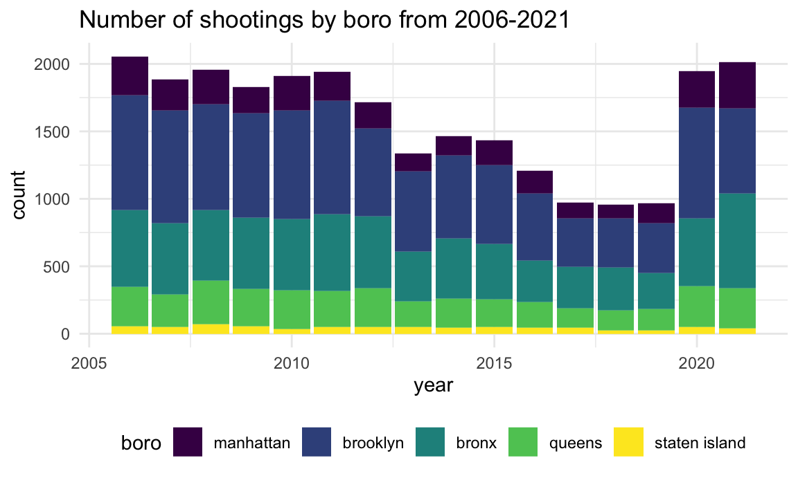
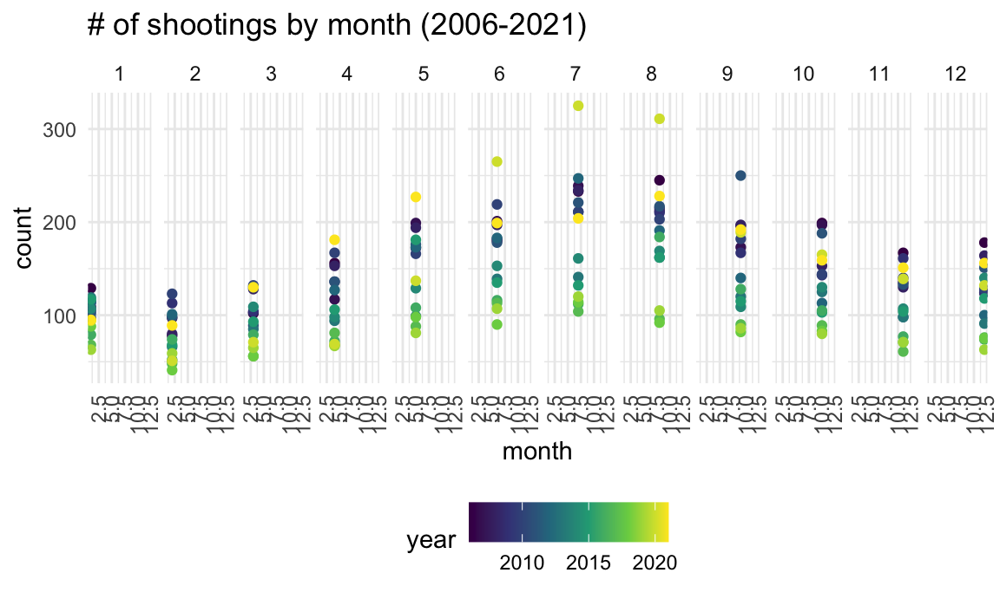
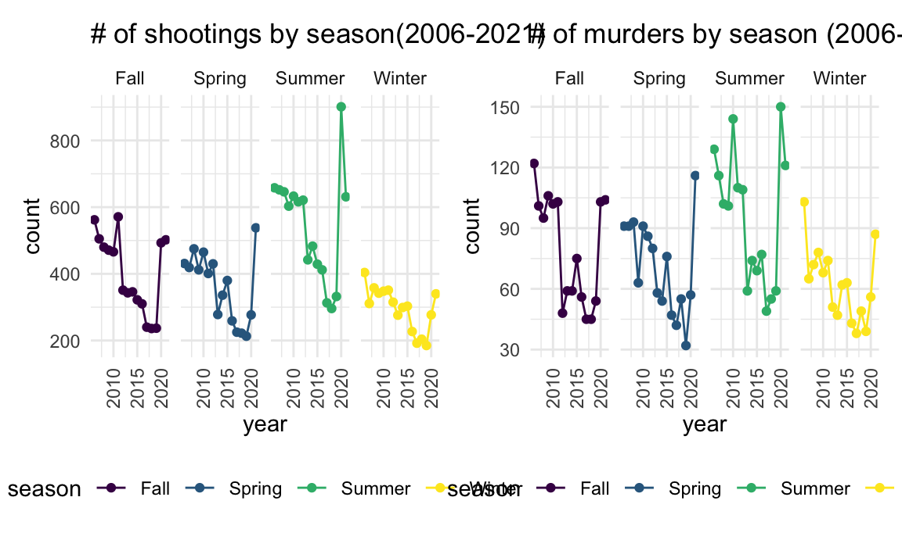
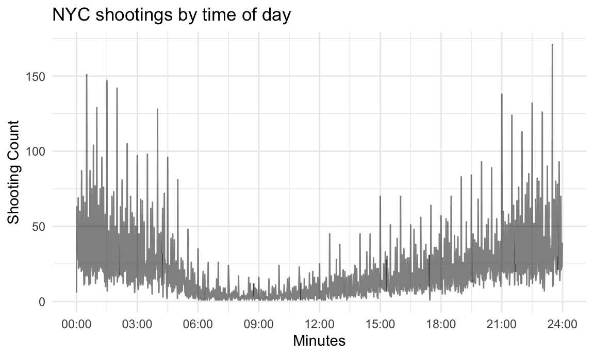

nypd_shooting_df =
read_csv("data/nypd_shooting_data.csv") %>%
janitor::clean_names() %>%
separate(col = occur_date, into = c("month", "day", "year"), sep = "/") %>%
separate(col = occur_time, into = c("hour", "minute", "second"), sep = ":") %>%
mutate(across(where(is.character), tolower),
month = as.numeric(month),
month_name = recode(month, "1" = "january", "2" = "february", "3" = "march", "4" = "april", "5" = "may", "6" = "june", "7" = "july", "8" = "august", "9" = "september", "10" = "october", "11" = "november", "12" = "december"),
day = as.numeric(day),
year = as.numeric(year),
hour = as.numeric(hour),
minute = as.numeric(minute),
second = as.numeric(second),
minute_calc = hour * 60 + minute,
boro = as.factor(boro),
boro = fct_relevel(boro, "manhattan", "brooklyn", "bronx", "queens", "staten island")) %>%
select(incident_key, year, month_name, month, day, hour, minute, second, minute_calc, everything())## Rows: 25596 Columns: 19
## ── Column specification ────────────────────────────────────
## Delimiter: ","
## chr (10): OCCUR_DATE, BORO, LOCATION_DESC, PERP_AGE_GROUP, PERP_SEX, PERP_R...
## dbl (7): INCIDENT_KEY, PRECINCT, JURISDICTION_CODE, X_COORD_CD, Y_COORD_CD...
## lgl (1): STATISTICAL_MURDER_FLAG
## time (1): OCCUR_TIME
##
## ℹ Use `spec()` to retrieve the full column specification for this data.
## ℹ Specify the column types or set `show_col_types = FALSE` to quiet this message.Shootings over time We wanted to see the longitudinal changes in shootings by borough. This is represented in the stacked bar graph below.
nypd_shooting_df %>%
group_by(year, boro) %>%
summarise(
count = n()) %>%
ggplot(aes(fill = boro, y = count, x = year)) +
geom_bar(position = "stack", stat = "identity") +
labs(title = "Number of shootings by boro from 2006-2021")## `summarise()` has grouped output by 'year'. You can
## override using the `.groups` argument.
Shootings and murders by season We wanted to see if shootings and shootings that resulted in murders were more likely during certain seasons. The line plots below show that shootings were more likely during the summer, and that summer of 2020 had the highest number of shooting incidents as compared to any other timeframe.
nypd_shooting_seasons = nypd_shooting_df %>%
mutate(
season = case_when(
month %in% 9:11 ~ "Fall",
month %in% c(12, 1, 2) ~ "Winter",
month %in% 3:5 ~ "Spring",
TRUE ~ "Summer"))
shootings_seasons = nypd_shooting_seasons %>%
group_by(year, season) %>%
summarise(
count = n()) %>%
ggplot(aes(y = count, x = year, color = season)) +
geom_point() + geom_line() +
facet_grid(cols = vars(season)) +
labs(title = "# of shootings by season(2006-2021)") +
theme(axis.text.x = element_text(angle = 90, vjust = 0.5, hjust = 1))## `summarise()` has grouped output by 'year'. You can
## override using the `.groups` argument.ggplotly(shootings_seasons)nypd_shooting_df %>% #not sure if we want to keep this plot
group_by(month, year) %>%
summarise(
count = n()) %>%
ggplot(aes(y = count, x = month, color = year)) +
geom_point() +
facet_grid(cols = vars(month)) +
labs(title = "# of shootings by month (2006-2021)") +
theme(axis.text.x = element_text(angle = 90, vjust = 0.5, hjust = 1))## `summarise()` has grouped output by 'month'. You can
## override using the `.groups` argument.
Murders followed a similar pattern, but the summer of 2010 also had a relatively high rate of murders.
murders_df = nypd_shooting_df %>%
filter(statistical_murder_flag == TRUE) %>%
janitor::clean_names()nypd_murders_season = murders_df %>%
mutate(
season = case_when(
month %in% 9:11 ~ "Fall",
month %in% c(12, 1, 2) ~ "Winter",
month %in% 3:5 ~ "Spring",
TRUE ~ "Summer"))
murders_seasons = nypd_murders_season %>%
group_by(year, season) %>%
summarise(
count = n()) %>%
ggplot(aes(y = count, x = year, color = season)) +
geom_point() + geom_line() +
facet_grid(cols = vars(season)) +
labs(title = "# of murders by season (2006-2021)") +
theme(axis.text.x = element_text(angle = 90, vjust = 0.5, hjust = 1))## `summarise()` has grouped output by 'year'. You can
## override using the `.groups` argument.ggplotly(murders_seasons)shootings_seasons + murders_seasons
Time of day of shooting We were also interested in seeing the time of day of shootings. In the figure below, we have plotted the time on the X axis and the number of incidents on the Y axis. We can see that the lowest number of shootings occur between 6 am and 1 pm, while the late evening and early morning hours are when most incidents take place.
nypd_shooting_df %>%
group_by(minute_calc) %>%
summarise(
count = n()) %>%
ggplot(
aes(x = minute_calc, y = count)) +
geom_line(alpha = .5) +
labs(title = "NYC shootings by time of day",
x = "Minutes",
y = "Shooting Count") +
scale_x_continuous(
breaks = c(0, 180, 360, 540, 720, 900, 1080, 1260, 1440),
labels = c("00:00", "03:00", "06:00", "09:00", "12:00", "15:00", "18:00", "21:00", "24:00"))